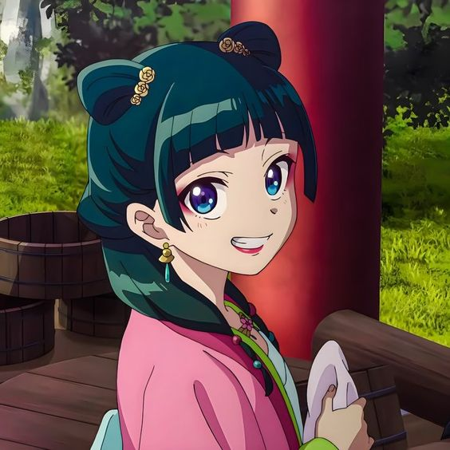

MaoMao

MaoMao is a character from the manga series called The Apothecary Diaries. In the manga, MaoMao works as an
apothecary, alongside her father. However, after being kidnapped on her way home one day, she was brought into the palace
to work as a laundry girl.
- I admire MaoMao for her personality and how to stands up to things that she believes in. She always
stays true to herself and doesn't backdown in the face of danger.
- MaoMao does not let power scare her. If something must be done, she will do it whether upfront or in the
shadows, to help those around her. She does not let what others think of her effect the way she does her job.
- MaoMao has a strong desire to learn things that she is interested in, going as far as using
herself as a test subject for her medicine. However, for things that she does
not like, she is horrible at learning them. Bringing out a childish side that she does not show often.